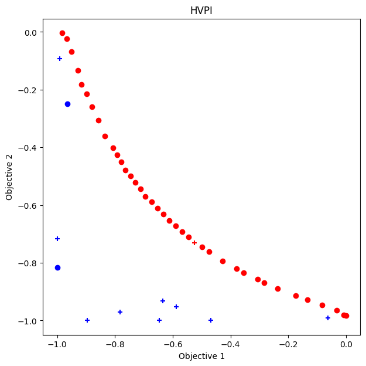
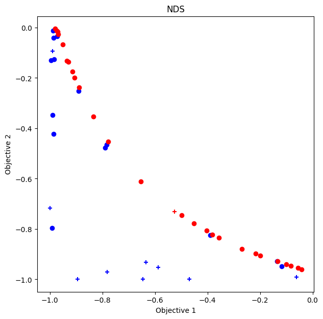
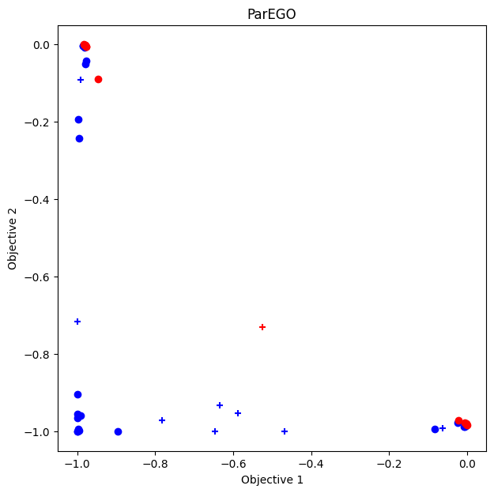
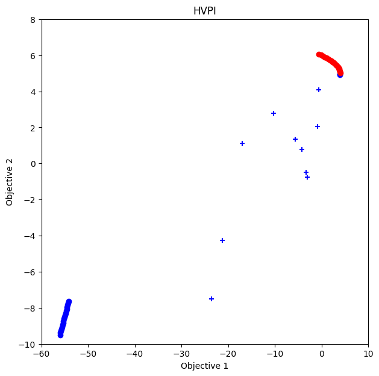
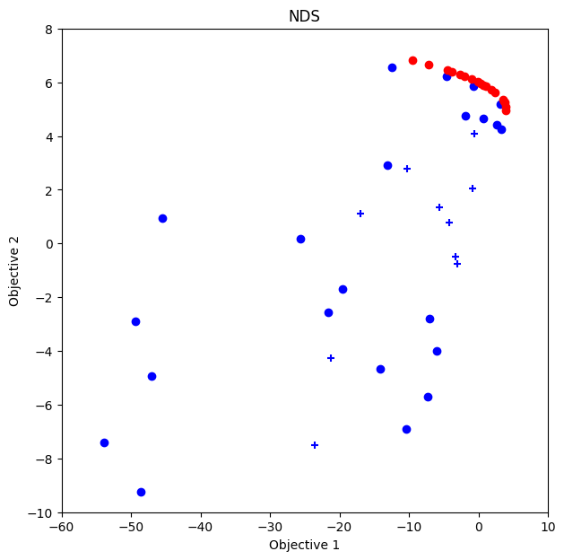

この jupyter notebook ファイルは ISSP Data Repository (develop branch) から入手できます。
多目的最適化の高速計算
前回のチュートリアル では、各目的関数を独立にガウス過程回帰し、パレート超体積を直接最大化していました。この方法は、目的関数の数が多い場合に計算時間が膨大になります。
本チュートリアルでは、複数の目的関数を一つの目的関数に統合し、それをベイズ最適化することで、多目的最適化を高速に行う方法を学びます。
多目的最適化の統合
\(i\) 番目のデータ点（特徴量）を \(\vec{x}_i\) とし、その点での目的関数の値を \(\vec{y}_i = (y_{i,1}, y_{i,2}, \dots, y_{i,p})\) とします。 \(\vec{y}_i\) から新たな目的関数 \(z_i\) を作り、 \(\vec{x}_i\) から \(z_i\) への関数 \(z_i = g(\vec{x}_i)\) をガウス過程回帰でモデリングし、ベイズ最適化を行います。
現在の PHYSBO では、 \(\vec{y}_i\) から \(z_i\) を作る方法として、非優越ソート法とParEGO法が提供されています。
非優越ソート法
定義
非優越ソート法 (Non-dominated Sorting; NDS) は、学習データ \(\vec{y}_i\) について非優越ソートによるランク付けを行い、そのランクに基づいた目的関数を新たに作る手法です。ランクは以下のように再帰的に定義されます。
学習データ全体のパレート解となる点のランクは \(r_i = 1\) である。
学習データからランク \(r_i = 1\) となる点を除いた残りのデータのパレート解となる点のランクは \(r_i = 2\) である。
同様に、学習データからランク \(r_i = 1,2,\dots,k-1\) となる点を除いた残りのデータのパレート解となる点のランクは \(r_i = k\) である。
最大ランク \(r_\text{max}\) に達するまで、同様の操作を繰り返す。残った点は \(r_i = \infty\) となる。
ランク \(r_i\) に基づいて、新たな目的関数 \(z_i\) を以下のように定義し、最大化します。
PHYSBOでの使い方
PHYSBOでは、 physbo.search.unify.NDS クラスとして NDS 法を実装しています。
unify_method = physbo.search.unify.NDS(rank_max=10)
rank_max はランクの最大値です。 これ以上のランクを持つ点については、 \(z_i = 0\) として処理されます。
ParEGO 法
定義
ParEGO法は、目的関数の値について重み付き和と重み付き最大値をとることで、多目的最適化を単目的最適化に帰着させる方法です。 目的関数の重みを \(\vec{w} = (w_1, w_2, \dots, w_p)\) とし、和と最大値の重みをそれぞれ \(\rho_\text{sum}\) と \(\rho_\text{max}\) とすると、新たな目的関数は
となります。
PHYSBO での使い方
PHYSBOでは、 physbo.search.unify.ParEGO クラスとして ParEGO 法を実装しています。
unify_method = physbo.search.unify.ParEGO(weight_sum=0.05, weight_max=1.0, weights=None, weights_discrete=0)
weight_sum と weight_max はそれぞれ \(\rho_\text{sum}\) と \(\rho_\text{max}\) に対応します。 weights には重み \(\vec{w}\) を指定します。
重み \(\vec{w}\) は \(\sum_{j} w_j = 1\) として自動的に規格化されます。
weights = Noneとすると、ベイズ最適化のステップごとに重みを乱数で生成します。weights_discreteに整数 \(s>0\) を指定すると、それぞれの重みが \(w_j = \frac{a_j}{s}\) となるように生成されます。ここで、 \(a_j\) は \(0, 1, \dots, s\) で、なおかつ \(\sum_{j} a_j = s\) です。
\(s=0\) の場合は、 \([0,1)\) の範囲で一様ランダムに重みを生成し、和が1になるように規格化されます。
また、 \(y_{i,j}\) は目的関数 \(j\) ごとに、学習データの最小値と最大値を用いて \([-1, 0]\) の範囲に正規化されます。
チュートリアル
前準備
[1]:
import time
import numpy as np
import matplotlib.pyplot as plt
import pandas as pd
import physbo
%matplotlib inline
seed = 12345
num_random_search = 10
num_bayes_search = 40
テスト関数
本チュートリアルでは引き続き、多目的最適化のベンチマーク関数である VLMOP2 を利用します。 なお、PHYSBO では physbo.test_functions.multi_objective に、VLMOP2を含めたいくつかの多目的最適化のベンチマーク関数が用意されています。
[2]:
sim_fn = physbo.test_functions.multi_objective.VLMOP2(dim=2)
探索候補データの準備
sim_fn は探索空間の最小値と最大値を min_X と max_X に持ちます。 これらを用いて、 physbo.search.utility.make_grid で探索候補点のグリッドを生成します。
[3]:
test_X = physbo.search.utility.make_grid(min_X=sim_fn.min_X, max_X=sim_fn.max_X, num_X=101)
simulator の定義
[4]:
simu = physbo.search.utility.Simulator(test_X=test_X, test_function=sim_fn)
HVPI
比較対象として、HVPIを用いたベイズ最適化を行います。
[5]:
policy = physbo.search.discrete_multi.Policy(test_X=test_X, num_objectives=2)
policy.set_seed(seed)
policy.random_search(max_num_probes=num_random_search, simulator=simu, is_disp=False)
time_start = time.time()
res_HVPI = policy.bayes_search(max_num_probes=num_bayes_search, simulator=simu, score='HVPI', interval=10, is_disp=False)
time_HVPI = time.time() - time_start
time_HVPI
[5]:
4.317495107650757
[6]:
fig, ax = plt.subplots(figsize=(7, 7))
physbo.search.utility.plot_pareto_front_all(res_HVPI, ax=ax, steps_end=num_random_search, marker="+")
physbo.search.utility.plot_pareto_front_all(res_HVPI, ax=ax, steps_begin=num_random_search)
ax.set_title("HVPI")
[6]:
Text(0.5, 1.0, 'HVPI')

[7]:
VID_HVPI = res_HVPI.pareto.volume_in_dominance([-1,-1],[0,0])
VID_HVPI
[7]:
np.float64(0.3285497837573861)
ベイズ最適化
Policy クラスは physbo.search.discrete_unified.Policy を利用します。
他の Policy と同じく、 random_search などで初期データを作成し、 bayes_search メソッドでベイズ最適化を行います。 他の Policy との違いは以下の通りです。
目的関数の単一化
単一化に使うアルゴリズムは bayes_search の unify_method 引数で指定します。 PHYSBO では physbo.search.unify.ParEGO と physbo.search.unify.NDS が用意されています。
獲得関数
獲得関数は単目的最適化のものと同じです。
PI (Probability of Improvement)
EI (Expected Improvement)
TS (Thompson Sampling)
非優越ソート
[8]:
policy = physbo.search.discrete_unified.Policy(test_X=test_X, num_objectives=2)
policy.set_seed(seed)
unify_method = physbo.search.unify.NDS(num_objectives=2)
policy.random_search(max_num_probes=num_random_search, simulator=simu, is_disp=False)
time_start = time.time()
res_NDS = policy.bayes_search(max_num_probes=num_bayes_search, simulator=simu, unify_method=unify_method, score='EI', interval=10, is_disp=False)
time_NDS = time.time() - time_start
time_NDS
[8]:
1.830704927444458
パレート解のプロット
[9]:
fig, ax = plt.subplots(figsize=(7, 7))
physbo.search.utility.plot_pareto_front_all(res_NDS, ax=ax, steps_end=num_random_search, marker="+")
physbo.search.utility.plot_pareto_front_all(res_NDS, ax=ax, steps_begin=num_random_search)
ax.set_title("NDS")
[9]:
Text(0.5, 1.0, 'NDS')

劣解領域体積
[10]:
VID_NDS = res_NDS.pareto.volume_in_dominance([-1,-1],[0,0])
VID_NDS
[10]:
np.float64(0.30923409715730354)
ParEGO
[11]:
policy = physbo.search.discrete_unified.Policy(test_X=test_X, num_objectives=2)
policy.set_seed(seed)
unify_method = physbo.search.unify.ParEGO(num_objectives=2)
res_random = policy.random_search(max_num_probes=num_random_search, simulator=simu, is_disp=False)
time_start = time.time()
res_ParEGO = policy.bayes_search(max_num_probes=num_bayes_search, simulator=simu, unify_method=unify_method, score='EI', interval=10, is_disp=False)
time_ParEGO = time.time() - time_start
time_ParEGO
[11]:
1.7820510864257812
パレート解のプロット
[12]:
fig, ax = plt.subplots(figsize=(7, 7))
physbo.search.utility.plot_pareto_front_all(res_ParEGO, ax=ax, steps_end=num_random_search, marker="+")
physbo.search.utility.plot_pareto_front_all(res_ParEGO, ax=ax, steps_begin=num_random_search)
ax.set_title("ParEGO")
[12]:
Text(0.5, 1.0, 'ParEGO')

劣解領域体積
[13]:
VID_ParEGO = res_ParEGO.pareto.volume_in_dominance([-1,-1],[0,0])
VID_ParEGO
[13]:
np.float64(0.18004551161609372)
比較
[14]:
# make table
df = pd.DataFrame({
"アルゴリズム": ["NDS", "ParEGO", "HVPI"],
"計算時間": [time_NDS, time_ParEGO, time_HVPI],
"劣解領域体積": [VID_NDS, VID_ParEGO, VID_HVPI]
})
df
[14]:
| アルゴリズム | 計算時間 | 劣解領域体積 | |
|---|---|---|---|
| 0 | NDS | 1.830705 | 0.309234 |
| 1 | ParEGO | 1.782051 | 0.180046 |
| 2 | HVPI | 4.317495 | 0.328550 |
NDS は HVPI と比較しても遜色ない結果（劣解領域体積）を、より短い計算時間で得ることができています。
一方のParEGOは、計算時間こそ短いですが、劣解領域体積が小さくなっています。
最適化問題によって、どのアルゴリズムがよい結果を出すかは変わります。
別のベンチマーク関数
Kita-Yabumoto-Mori-Nishikawa 関数を用いたベイズ最適化を行います。
の2つの目的関数を最大化する問題です。
また、 \(x\) と \(y\) には
という制約条件があります。
Kita, H., Yabumoto, Y., Mori, N., Nishikawa, Y. (1996). Multi-objective optimization by means of the thermodynamical genetic algorithm. In: Voigt, HM., Ebeling, W., Rechenberg, I., Schwefel, HP. (eds) Parallel Problem Solving from Nature — PPSN IV. PPSN 1996. Lecture Notes in Computer Science, vol 1141. Springer, Berlin, Heidelberg. https://doi.org/10.1007/3-540-61723-X_1014
[15]:
fn_KYMN = physbo.test_functions.multi_objective.KitaYabumotoMoriNishikawa()
test_X_KYMN = physbo.search.utility.make_grid(min_X=fn_KYMN.min_X, max_X=fn_KYMN.max_X, num_X=101, constraint=fn_KYMN.constraint)
simu_KYMN = physbo.search.utility.Simulator(test_X=test_X_KYMN, test_function=fn_KYMN)
HVPI
[16]:
policy = physbo.search.discrete_multi.Policy(test_X=test_X_KYMN, num_objectives=2)
policy.set_seed(seed)
policy.random_search(max_num_probes=num_random_search, simulator=simu_KYMN, is_disp=False)
time_start = time.time()
res_KYMN_HVPI = policy.bayes_search(max_num_probes=num_bayes_search, simulator=simu_KYMN, score='HVPI', interval=10, is_disp=False)
time_KYMN_HVPI = time.time() - time_start
VID_KYMN_HVPI = res_KYMN_HVPI.pareto.volume_in_dominance(fn_KYMN.reference_min, fn_KYMN.reference_max)
VID_KYMN_HVPI
fig, ax = plt.subplots(figsize=(7, 7))
physbo.search.utility.plot_pareto_front_all(res_KYMN_HVPI, ax=ax, steps_end=num_random_search, marker="+")
physbo.search.utility.plot_pareto_front_all(res_KYMN_HVPI, ax=ax, steps_begin=num_random_search)
ax.set_xlim(-60, 10)
ax.set_ylim(-10, 8)
ax.set_title("HVPI")
[16]:
Text(0.5, 1.0, 'HVPI')

ParEGO
[17]:
policy = physbo.search.discrete_unified.Policy(test_X=test_X_KYMN, num_objectives=2)
policy.set_seed(seed)
unify_method = physbo.search.unify.ParEGO(num_objectives=2)
policy.random_search(max_num_probes=num_random_search, simulator=simu_KYMN, is_disp=False)
time_start = time.time()
res_KYMN_ParEGO = policy.bayes_search(max_num_probes=num_bayes_search, simulator=simu_KYMN, unify_method=unify_method, score='EI', interval=10, is_disp=False)
time_KYMN_ParEGO = time.time() - time_start
VID_KYMN_ParEGO = res_KYMN_ParEGO.pareto.volume_in_dominance(fn_KYMN.reference_min, fn_KYMN.reference_max)
VID_KYMN_ParEGO
fig, ax = plt.subplots(figsize=(7, 7))
physbo.search.utility.plot_pareto_front_all(res_KYMN_ParEGO, ax=ax, steps_end=num_random_search, marker="+")
physbo.search.utility.plot_pareto_front_all(res_KYMN_ParEGO, ax=ax, steps_begin=num_random_search)
ax.set_xlim(-60, 10)
ax.set_ylim(-10, 8)
ax.set_title("ParEGO")
[17]:
Text(0.5, 1.0, 'ParEGO')

NDS
[18]:
policy = physbo.search.discrete_unified.Policy(test_X=test_X_KYMN, num_objectives=2)
policy.set_seed(seed)
unify_method = physbo.search.unify.NDS(num_objectives=2)
policy.random_search(max_num_probes=num_random_search, simulator=simu_KYMN, is_disp=False)
time_start = time.time()
res_KYMN_NDS = policy.bayes_search(max_num_probes=num_bayes_search, simulator=simu_KYMN, unify_method=unify_method, score='EI', interval=10, is_disp=False)
time_KYMN_NDS = time.time() - time_start
VID_KYMN_NDS = res_KYMN_NDS.pareto.volume_in_dominance(fn_KYMN.reference_min, fn_KYMN.reference_max)
VID_KYMN_NDS
fig, ax = plt.subplots(figsize=(7, 7))
physbo.search.utility.plot_pareto_front_all(res_KYMN_NDS, ax=ax, steps_end=num_random_search, marker="+")
physbo.search.utility.plot_pareto_front_all(res_KYMN_NDS, ax=ax, steps_begin=num_random_search)
ax.set_xlim(-60, 10)
ax.set_ylim(-10, 8)
ax.set_title("NDS")
[18]:
Text(0.5, 1.0, 'NDS')

比較
[19]:
pd.DataFrame({
"アルゴリズム": ["NDS", "ParEGO", "HVPI"],
"計算時間": [time_KYMN_NDS, time_KYMN_ParEGO, time_KYMN_HVPI],
"劣解領域体積": [VID_KYMN_NDS, VID_KYMN_ParEGO, VID_KYMN_HVPI]
})
[19]:
| アルゴリズム | 計算時間 | 劣解領域体積 | |
|---|---|---|---|
| 0 | NDS | 1.769309 | 970.781427 |
| 1 | ParEGO | 1.763690 | 975.909589 |
| 2 | HVPI | 3.961754 | 932.139351 |
この最適化問題では、 ParEGOがよい結果を出しています。